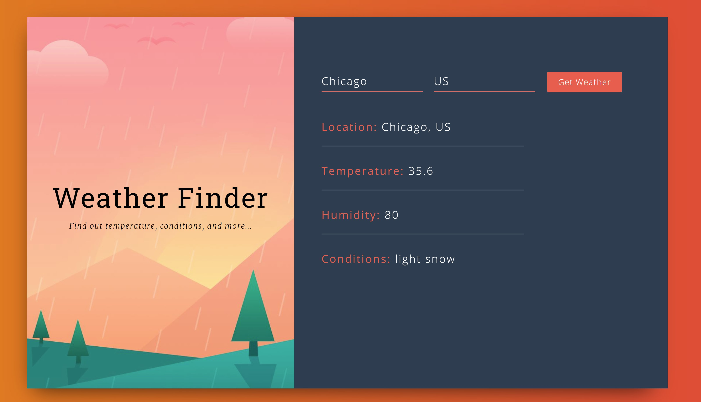
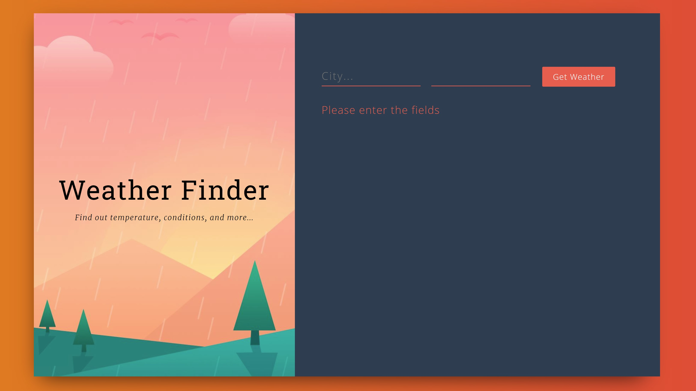

Weather
Spring break is here! Along with the coronavirus :/ But rather than sit around watching movies, I've decided to create some sort of project every day (we'll see how this goes)
In the last hackathon I participated in, we used React to display the contents of an API. I liked this format and decided to practice it using a different API, committing myself to understanding the different components of a react project.
The API I used was from
Let's see what I try to make tomorrow!
Above is the main page
Above is an example of a united states city result. I have not yet added a state specifier, as I was only aiming for a base functionality.

Here is a second example, but from a different country.
Here is the error message displayed if the button is pressed without the fields being filled.